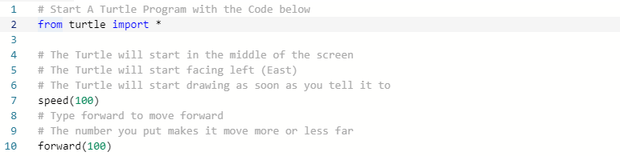
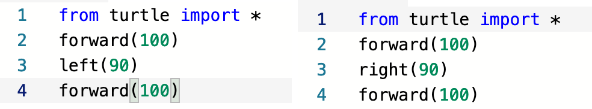
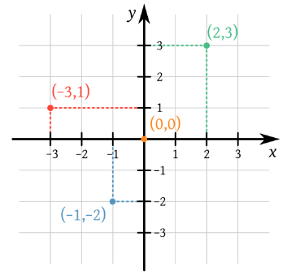
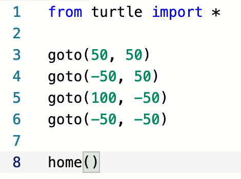

In this lesson, we will learn how to draw different shapes and create your own ideas.
Repl.it: https://repl.it/
Join The Class - Click this to join the replit class.
What is Python? What is Turtle?
Python is a programming language. It changes what the code looks like. Turtle is an add-on to python that lets you control a “turtle” that moves along the screen drawing lines and making shapes. The turtle is like the point on a pen, and using the turtle is just like drawing.
Take a look at "Box".
When the turtle moves left or right, it moves based on the number inside the "forward" command. The figure below shows the code that would make the turtle move.

Now continue with the rest of the code's comments (signified by the # symbol) and see what happens when you run the entire piece of code.
Now let’s make our own turtle program!
How can we make a turtle turn left or right?
Make a new "Repl" project of your own and copy down one of the programs below.

What happens when you use the "left" and "right" commands? We can use these commands together with the forward command to make the turtle move around and draw different shapes on the computer screen. Can you make the turtle turn less than 90 degrees? Notice how in the "Box" program we use the same turn several times in order to create a square. Try drawing a differnt shape, like a triangle or hexagon!
Now let's say that we want the turtle to go to any position on the screen we want without having to calculate the path there. To do this we use the "Goto" function.
The "Goto" function allows us to tell the program the exact position we want our turtle to move to in a straight line. How exactly does it know where this place is, though? We need to use the coordinate plane in order to have a system where both we and the computer know where things are on the computer screen.

The first number (x) shows how far left or right we are. The second number (y) shows how far up or down we are. Notice how numbers below 0 or to the left of zero are negative.
Open the MerCoder Goto program in Repl.it! Let's run the program and see what shape is created.
Now change the numbers in the goto functions and see where the turtle goes. Can you make a new shape with these commnds?

Notice how the "home" function makes the turtle return to its starting position. This is very helpful when you are having trouble keeping track of where your turtle will end up.
Finished with this lesson? Great! Now you're ready to move onto the second part!
Python with Turtle: Basics Sequel